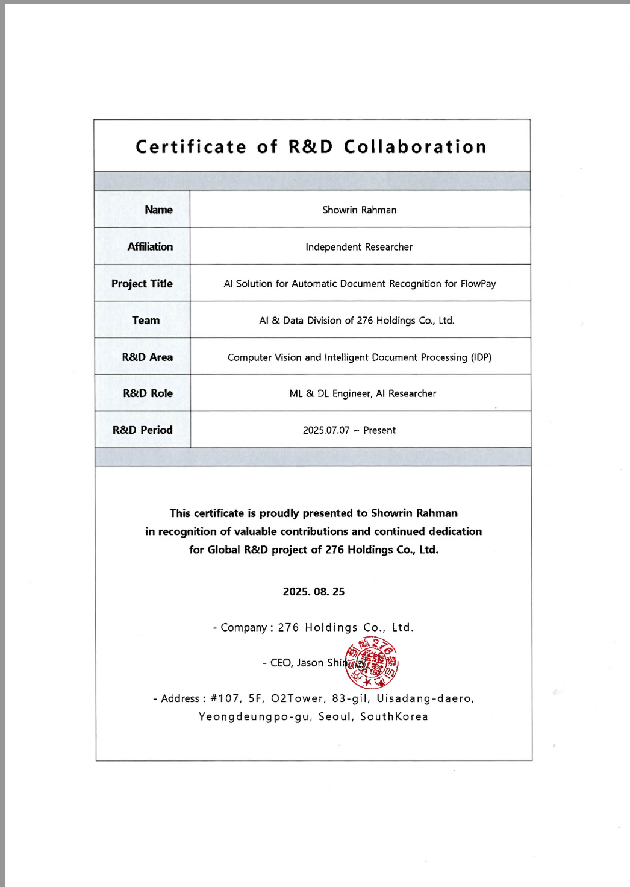

Publications & Projects
Showrin Rahman

PhD Applicant · Fall 2027
Publications
Springer • IEEE • arXiv
TWIG: Two-Step Image Generation Using Segmentation Masks to Prevent Copyright Infringement
Showrin Rahman et al. — IFIP AICT, Springer, 2024
A two-step diffusion pipeline where segmentation masks decouple structure from texture, generating copyright-free training images without reproducing protected visual content.
Riverbank Change Detection in the Jamuna River Basin, Bangladesh: A Remote Sensing and Machine Learning Approach
Showrin Rahman et al. — IEEE ACDSA, 2025
Integrates Sentinel-2 satellite imagery, spectral indices (NDWI, NDVI), and ML classifiers in Google Earth Engine to analyze and predict multi-temporal riverbank changes in the Jamuna basin — directly relevant to flood risk and erosion monitoring in climate-vulnerable Bangladesh.
TextDiffuser-RL: Efficient and Robust Text Layout Optimization for High-Fidelity Text-to-Image Synthesis
Showrin Rahman et al. — arXiv:2505.19291, 2025
Introduces RL-guided character-level text layout optimization for diffusion-based text-to-image models, improving glyph rendering fidelity and spatial coherence over existing baselines.
Masked Autoencoder and Mamba-Based Self-Supervised Segmentation of SAR Imagery for Riverbank Erosion Detection
Showrin Rahman — Undergraduate Thesis, BRAC University, 2025
Develops a self-supervised framework combining Masked Autoencoders and Mamba state-space models for semantic segmentation of Sentinel-1 SAR imagery to automate land-water boundary delineation and detect riverbank erosion — without requiring dense manual annotation. GAN-based reconstruction is used to fill temporal data gaps in the SAR time series.
Research & ML Projects
Implementation and experimental work underlying or adjacent to publications.

FlowPay — AI Solution for Automatic Document Recognition
276 Holdings Co., Ltd. — AI & Data Division • Seoul, South Korea •
Jul 2025 – Present
Role: ML & DL Engineer, AI Researcher (Independent Researcher)
Developed OCR pipelines using EasyOCR and Tesseract for Automatic Document Recognition for FlowPay. Applied document-specific image preprocessing and MSFAA-based deblurring to improve OCR accuracy on degraded business documents. R&D area: Computer Vision and Intelligent Document Processing (IDP).
Certificate of R&D Collaboration issued Aug 2025 · 276 Holdings Co., Ltd.
Vegetation Degradation Detection via Satellite Imagery
Remote Sensing · Deep LearningCNN-based classifier on EuroSAT satellite data to identify vegetation health and degradation patterns at scale.
GitHub →Cyclone Evacuation Optimization via Agent-Based Simulation
Multi-Agent Systems · SimulationAgent-based model simulating and optimizing evacuation routes during cyclone threats — applied AI for disaster response.
GitHub →BiLSTM Part-of-Speech Tagger
NLP · Sequence ModelingBidirectional LSTM achieves 97% accuracy on token-level POS tagging (POS 1 dataset). Demonstrates sequence-to-sequence neural labeling.
GitHub →MangoScan — Fine-Grained Image Classifier
Computer Vision · PyTorchFine-grained classifier for 10 Bangladeshi mango varieties using PyTorch transfer learning — 95.05% accuracy. Streamlit demo.
GitHub →CrisisCrewBot — AI Emergency Response System
LLM Application · ReactAI-powered fire emergency data collection system for Dhaka, integrating Gemini AI and real-time Google Sheets reporting.
ThesisConnect — Academic Collaboration Platform
Full Stack · Research ToolsEcosystem for thesis management, research sharing, and scholarly communication. Built with React, Node.js, Express, MongoDB.
LLM Resource Tracker
Browser Extension · Sustainable AIPrivacy-first browser extension estimating token, energy, and water consumption of LLM sessions on-device. Supports ChatGPT, Claude, Gemini.
GitHub →